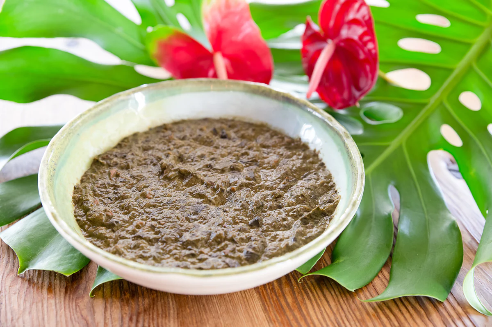

Squid Luau
Pronunciation: "Squid" "loo-ow" ("ow" pronounced in the way of expressing pain)

Yeah I know, but it's better than it looks trust me
Depending on preference and who makes it, it can be a savory dish with a nice sweetness to it
Ingredients
- Squid
- Taro leaves
- Coconut milk
- Hawaiian Sea Salt
- Sweet yellow onion
- Butter
- Sugar
Steps
- Clean the taro leaves thoroughly and remove the leaf from the stems
- Chop the leaves into small pieces, like the size of kit kat bars
- Cut the onions into thin slices
- Boil the leaves in a pot of water with the Hawaiian Sea Salt, bring to a simmer and leave alone for 1 hour
- Clean the squid: remove feeler tentacles, innards, skin on the head, cartilage, beak, and discard
- Cut squid into bite size pieces and set aside
- Drain the leaves with a colander and push down to remove as much water as you can
- In a separate pot, melt the butter and saute the squid and onions until onions are translucent
- Throw in the leaves, sugar, salt, and coconut milk and mix it well
- Let it simmer for 30 minutes stirring occasionally
- Remove from heat
To Serve
- Grab a bowl and put rice on one side of the bowl
- Drop a good amount of the squid luau next to it
- Have at it!